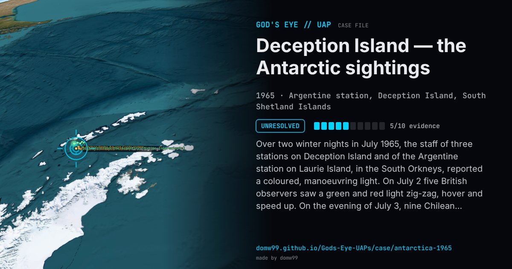

Deception Island — the Antarctic sightings

Over two winter nights in July 1965, the staff of three stations on Deception Island and of the Argentine station on Laurie Island, in the South Orkneys, reported a coloured, manoeuvring light. On July 2 five British observers saw a green and red light zig-zag, hover and speed up. On the evening of July 3, nine Chilean observers watched a light change colour and leave a steam-like trail, and at 19:42 seventeen people at the Argentine station, three Chilean visitors among them, watched a lens-shaped object. In a statement on July 6, the Argentine Navy described “a giant, lens-shaped flying object, solid in appearance, mostly red and green in color”, moving on a zig-zag course toward the east with changes of speed and direction, without sound, 10 to 15 km away. On Laurie Island, two variometers registered “sudden and strong disturbances of the magnetic field” during a 15-second sighting.
Explanation
The Argentine Navy said in an official statement that its observers had seen a solid, lens-shaped flying object, and Lt. Daniel Perisse, at the Argentine station, said a weather balloon, a plane or a star had been ruled out. No explanation was ever published, and the photographs said to have been taken have not been released.
What was seen
Shape: Lens-shaped object, mostly red and green, changing to yellow, blue, white and orange
Witnesses: Seventeen people at the Argentine station; nine at the Chilean station; five at the British base; two meteorologists on Laurie Island
Duration: 15–20 minutes (Navy statement)